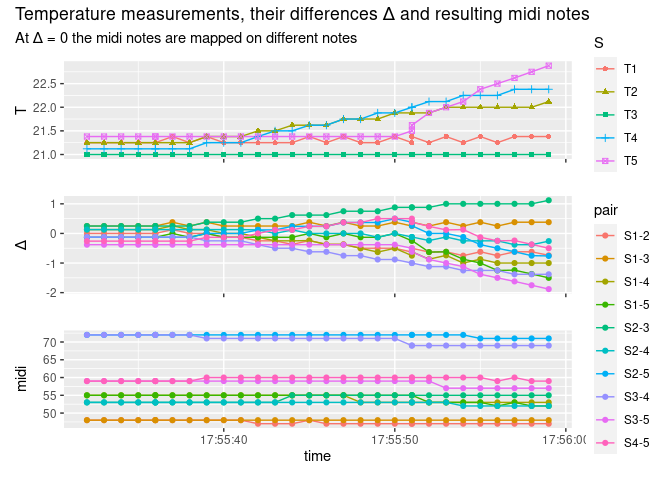
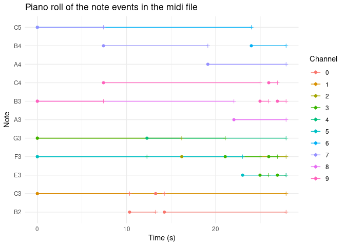

Basically, the machine translates temperature measurements into sound in real time. It consists of a micro-controller that receives the measured temperatures of multiple thermometers and then sends these to the computer with arduino code (see here). On the PC a python program (see here) runs a main loop where the sent temperature data is read. There it also translates the temperature differences into midi notes of a chosen scale. The midi nodes are sent to fluidsynth which finally synthesizes the midi notes to sound.
Main steps in the chaos machine
- hover (mouse-over) to see description
- click on clickable nodes (not all) to view source code file
The main interfaces are the serial connection between python and the arduino on the one hand. On the other hand, the midi format can either be synthesized directly with a midi port or by rendering the midi to audio files. This is done by fluidsynth using an sf2 soundfont that stores audio information for midi notes.
Bigger picture
Watch here if you’re interested in a deeper understanding of the available tools in the project and arduino / midi in general.
The execution of the code produces output files. These are then processed for visualization of the notes and audio file output. Furthermore, there are some auxiliary functions. The following diagram depicts how these programs can be used and how the terms roughly interact with each other.
Live plotter
Perhaps it’s best to start with the data sent by the micro-controller. It’s really easy to program a live plotter in R with the package arduinor. This yields an app shown here:
vembedr::embed_url("https://www.youtube.com/watch?v=HDclBWmdEOw")
showing how I touched 4 of the 5 thermometers briefly after stating the measurements.
Output files
The main python programm produces
- csv output files of
- the temperatures from the serial connection
- the calculated temperature differences
- the derived midi notes, as well as
- a midi file
- which is then transformed to audio files by fluidsynth using the specified sf2 soundfont
- furthermore, the midi file can be transformed to a musescore mscz file which can then be animated to this beauty
Python loop data
The data in the csv files is produced during the loop. Only look into that if you’re interested in detail in the dictionary data structures that are used in the main loop. This data can be visualized as follows:

Midi files
Probably it’s more interesting to look at the piano roll visualization of the
midi file that’s also generated. In the algorithm a new note is only started if it differs from the previous note, otherwise the previous is continued.

Audio files
The midi files can be rendered to audio files also using fluidsynth and a soundfont.
You can listen to the result here:
Musescore
the midi file can be transformed to the musescore format by running
mscore3 live_record.mid -o output_file.mscz